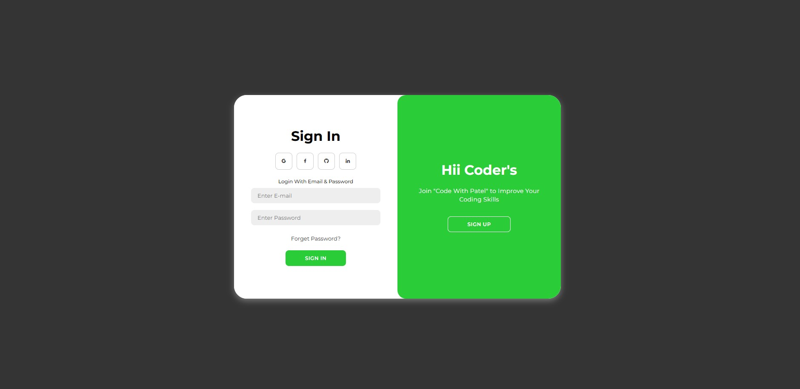
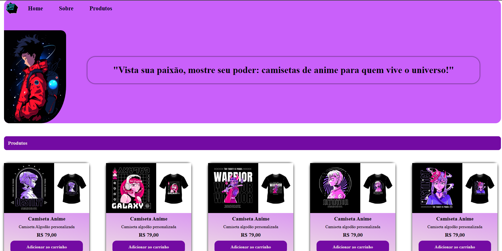

Roni Júnior
Sobre Mim
Sou apaixonado por tecnologia e desenvolvimento de software. Trabalho com Back-End e integrações com Inteligência Artificial, focando em soluções eficientes utilizando JavaScript, Node.JS, Express, Next.Js, Python com FastAPi/Django e Automações com N8N.
Em bancos de dados tenho experiência em SQL Server, MySQL e atualmente estou usando o PostgreSQL.
Atuo no tratamento de páginas Front-End com HTML5, CSS3, TailwindCSS e React realizando ajustes para páginas interativas com JavaScript.
Atualizo meu portfólio e GitHub com projetos nos quais tenho trabalhado ou que estou estudando no momento.
Baixar Currículo
Dev_Xavier Projects
Bem-Vindo ao Meu Portfólio
Explore minha coleção de projetos em JavaScript, HTML5, CSS3, TailWindCSS, N8N e veja no que tenho trabalhado!
Projetos Com HTML, CSS e TailWindCSS
Projeto 1: Landing Page Coca-Cola
Este projeto foi desenvolvido utilizando HTML e CSS, com o objetivo de proporcionar uma experiência prática e aprofundada no uso dessas duas linguagens essenciais para a construção de páginas web. Através desse projeto, busca-se não apenas aprimorar as habilidades técnicas necessárias para estruturar e estilizar páginas, mas também aumentar a confiança do desenvolvedor ao trabalhar com código HTML e CSS, oferecendo uma base sólida para projetos futuros e garantindo maior segurança e eficácia ao manipular essas tecnologias.
 "GitHub Code"
"GitHub Code"
Projeto 2: Dev Form
O Dev Form foi um dos primeiros projetos que criei quando comecei meus estudos no mundo da programação, e ele marcou o início da minha jornada de aprendizado. Foi uma experiência enriquecedora, onde pude aplicar os conceitos que estava absorvendo, principalmente nas linguagens HTML e CSS pela Plataforma da One Bit Code. Esse projeto me proporcionou uma compreensão mais profunda sobre a construção de interfaces web e a importância do design responsivo, além de me permitir praticar o uso de elementos estruturais e de estilo, fundamentais para o desenvolvimento de páginas na internet. Com o Dev Form, fui capaz de consolidar uma base sólida de conhecimentos e dar meus primeiros passos na criação de interfaces interativas e funcionais.
 "GitHub Code"
"GitHub Code"
Projeto 3: Google IU Clone
Este projeto foi cuidadosamente desenvolvido utilizando as tecnologias HTML e CSS no curso da Plataforma da Rocketseat, servindo como uma excelente oportunidade para aprofundar meus conhecimentos e habilidades nessas linguagens essenciais para o desenvolvimento web. Durante sua criação, tive a chance de aplicar na prática conceitos fundamentais, explorar diferentes abordagens de estilização e estruturação de páginas, além de experimentar soluções criativas para desafios de design. Essa experiência não apenas reforçou minha compreensão sobre HTML e CSS, mas também ampliou minha confiança ao utilizá-los para criar interfaces funcionais, atraentes e alinhadas aos padrões modernos de desenvolvimento.
 "GitHub Code"
"GitHub Code"
Projetos Com JavaScript
Project 4: Calculadora com %.
Este foi o primeiro aplicativo que desenvolvi utilizando JavaScript, e essa experiência foi extremamente desafiadora e enriquecedora. No início, enfrentei diversas dificuldades, principalmente relacionadas à sintaxe da linguagem e ao entendimento de conceitos como manipulação do DOM e funções assíncronas. Contudo, com dedicação, estudos e prática, consegui superar esses obstáculos e entender melhor como a linguagem funciona, o que me permitiu construir uma aplicação funcional e ampliar meus conhecimentos na área de desenvolvimento web.
 "GitHub Code"
"GitHub Code"
Projeto 5: Geolocalização com JavaScript
O projeto foi desenvolvido utilizando JavaScript básico, com foco em funcionalidades interativas simples, enquanto o CSS e o HTML foram responsáveis por dar vida ao design e estrutura visual. O JavaScript permite que a página reaja de forma dinâmica às ações do usuário diante da sua localização, enquanto o CSS garante um visual moderno e responsivo, e o HTML organiza o conteúdo de maneira acessível. Juntas, essas tecnologias criam uma experiência de navegação prática, funcional e visualmente atraente.
 "GitHub Code"
"GitHub Code"
Projeto 6: Página Animada
Esta página interativa foi desenvolvida com HTML, CSS e JavaScript, permitindo uma experiência única e envolvente para os usuários. O HTML estrutura o conteúdo de forma clara e acessível, enquanto o CSS garante um design moderno e responsivo, adaptando-se a diferentes dispositivos. O JavaScript, por sua vez, adiciona interatividade dinâmica à página, tornando a navegação mais fluida e personalizada. Com essas tecnologias, criamos uma interface que não apenas encanta visualmente, mas também oferece uma interação prática e imersiva para os visitantes..
 "GitHub Code"Projeto 7: Site de Camisetas Geek
Combinando o poder de HTML, CSS e JavaScript, desenvolvi uma experiência única e completamente interativa, projetada para proporcionar um visual atraente, moderno e funcional. O objetivo foi criar um ambiente que não apenas se destacasse pelo design envolvente, mas também oferecesse funcionalidades intuitivas e acessíveis. Este projeto foi pensado para permitir que você expresse todo o seu amor pelos universos geek de uma forma estilosa, criativa e personalizada, unindo tecnologia e paixão em uma interface que reflete originalidade e conexão com sua identidade.
 "GitHub Code"Projetos Com N8N / AI / PostgreSQL
Projeto 8: 🚀 Automação Inteligente com n8n + PostgreSQL
🚀 Automação Inteligente com n8n + PostgreSQL!
Acabei de implementar um fluxo no n8n totalmente integrado ao PostgreSQL, focado em gerenciar mensagens de clientes de forma escalável, confiável e automatizada.
🧠 O que ele faz?
Todos os dias, o fluxo processa uma lista de client_id, verifica o last_message_time e decide se deve inserir uma nova linha ou atualizar com novas mensagens reais extraídas de raw_messages — tudo com base em um intervalo de 24h.
🛠️ Tecnologia aplicada – 11 nós bem afinados:
▫️ Schedule: Roda diariamente às 00:00 (fuso America/Sao_Paulo)
▫️ PostgreSQL: Consulta paginada com LIMIT/OFFSET para escalar com segurança
▫️ IF: Decide entre atualizar ou inserir
▫️ Loop Over Items: Itera por cada cliente
▫️ Error Trigger: Captura falhas e registra no error_log com precisão
✨ Destaques que fazem a diferença:
✔️ Escalabilidade garantida com paginação
✔️ Confiabilidade com tratamento de erros robusto
✔️ Precisão temporal com fuso local sincronizado
📊 Resultado?
Menos trabalho manual, dados organizados e um processo sólido, pronto para produção — tudo conectado ao banco de dados.
Mais um passo firme na jornada de automações com n8n e IA!
Projeto 9: 🤖 Automação de Leads para uma Clínica Odontológica no n8n! 🦷📊
Criei um fluxo no n8n para extrair leads do Facebook Ads e organizá-los automaticamente em uma planilha! 📑✨
🔹 Como funciona?
1️⃣ O webhook captura os leads assim que são gerados no Facebook.
2️⃣ Os dados são processados e organizados.
3️⃣ O fluxo adiciona informações como data, WhatsApp, e-mail e nome formatado.
4️⃣ Tudo é salvo automaticamente em uma planilha para fácil acompanhamento!
📌
✅ Benefícios:
✔️ Automação sem complicação
✔️ Agilidade no follow-up dos leads
✔️ Dados sempre organizados e atualizados
Isso otimiza muito o tempo da equipe comercial e aumenta as chances de conversão!
 "GitHub Code"
"GitHub Code"
Projeto 10: 🚀 Automação + IA no Atendimento da Barbearia 💈🤖
🚀 Automação + IA no Atendimento da Barbearia 💈🤖
Apresento um dos nossos últimos fluxos criados no n8n, integrando Inteligência Artificial, Intervenção Humana e WhatsApp para otimizar o agendamento e cancelamento de horários em barbearias.
👨💻 O sistema:
✅ Autentica e normaliza mensagens recebidas
✅ Converte áudios em texto com IA
✅ Gera respostas personalizadas com nosso Agente de IA
✅ Permite intervenção humana quando necessário
✅ Notifica clientes via WhatsApp em tempo real
✅ Captura e trata os agendamentos direto no banco de dados
🔧 Fluxo 100% adaptável para outros negócios como clínicas, salões, delivery e mais!
💡 Soluções práticas e escaláveis com foco em eficiência, experiência do cliente e automação inteligente.
 "GitHub Code"
"GitHub Code"
🤖 Linguagens e Técnologias:
Entre em Contato
"Contate-me via WhatsApp:"
"Enviar mensagem no WhatsApp"